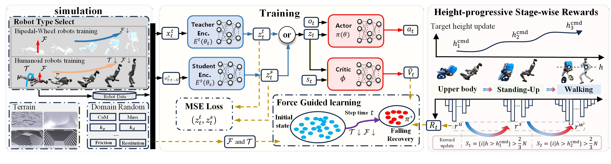
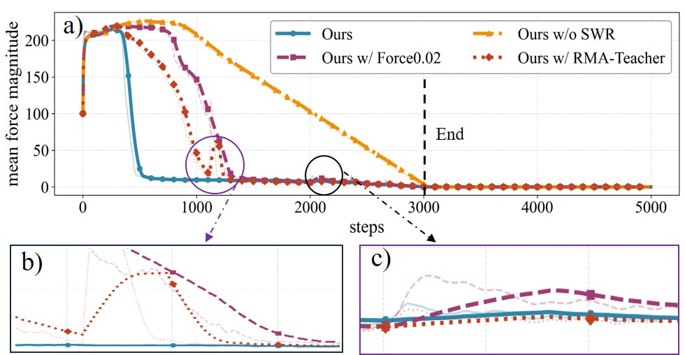
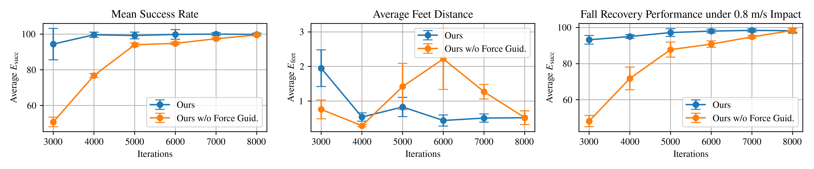
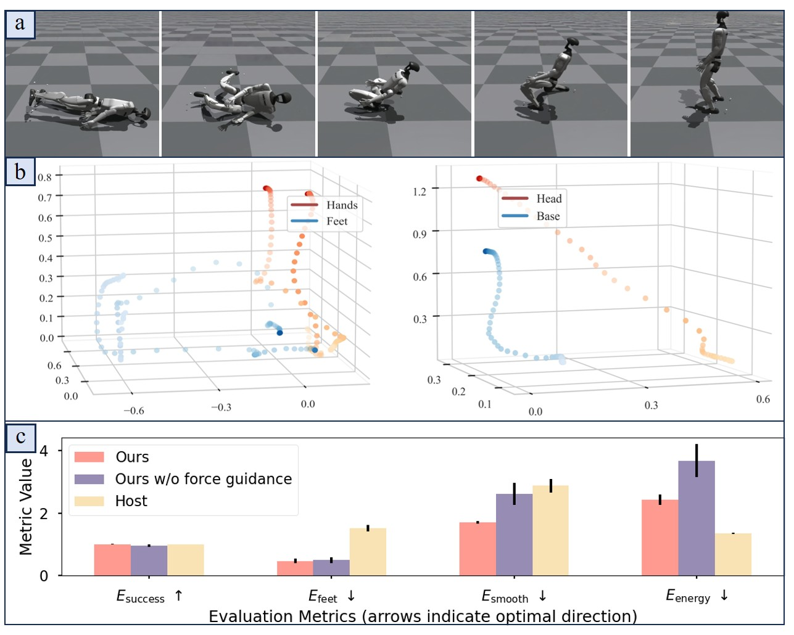

Abstract
Fall recovery is critical for autonomous legged locomotion. Existing methods have demonstrated that some legged robots, such as humanoids and quadrupeds, are capable of fall recovery from diverse postures by utilizing arms or coordinating multi-legs to generate support forces. Without arms or other legs to provide supportive assistance, a bipedal-wheeled robot must rely solely on the actuation of its legs, making recovery particularly difficult. To address this, we introduce FTSR (Force-guided Teacher-student framework with Stage-wise Rewards). The force-guided method constructs an external auxiliary force during simulation training that correlates directly with the robot's real-time height, explicitly formulating this force as an optimizable constraint. Through constrained reinforcement learning, the policy is guided toward reducing force dependency gradually and increasing the body height, developing internal recovery strategies despite having no arms for support. Height-progressive stage-Wise rewards progressively structure posture stabilization during recovery and transition to sustained locomotion, integrated with teacher-student architecture distilling privileged knowledge of force effects and recovery dynamics. After simulation training, the policy is deployed on a physical armless bipedal-wheeled robot and extensively evaluated. Experiments confirm robust and reliable fall recovery under diverse challenging conditions, demonstrating strong environmental adaptability and motion robustness, while maintaining full post-recovery motion capability. The framework also generalizes effectively to a high-DOF humanoid, confirming its practical generalizability.
Method
The overall framework is illustrated in Fig. 1. Armless bipedal-wheeled robots lack upper-body support during fall recovery, making them prone to convergence to dead points under pure reward optimization. This motivates formulating external auxiliary forces $\mathcal{F}$ and torques $\mathcal{T}$ as optimizable constraints rather than decaying curricula, enabling the policy to gradually reduce dependency on external assistance while discovering physically feasible recovery trajectories. Such constraint-guided exploration necessitates stable posture refinement across phases, which we achieve through height-progressive stage-wise rewards that auto-transition based on batch height statistics rather than fixed durations.
Realizing these mechanisms requires balancing privileged information with proprioceptive-only execution, leading to a teacher-student architecture where teacher encoder $E^t$ processes $\mathbf{x}^t_t$ comprising contact forces, base height, and full base state, while student encoder $E^s$ learns equivalent representations from history $\mathbf{o}^s_{t:t-H}$. This history concatenates observations $\mathbf{o}_t$ over past $H$ steps, where each $\mathbf{o}_t \in \mathbb{R}^{34}$ includes angular velocity, gravity projection, user commands, joint positions, velocities, and previous actions. An "or" module routes latent $\mathbf{z}^t_t$ or $\mathbf{z}^s_t$ to shared Actor-Critic networks by agent group, producing $\mathbf{z}_t$ concatenated with current $\mathbf{o}_t$ and $\mathbf{s}_t \in \mathbb{R}^{188}$ containing height map and robot base height. The networks output actions $\mathbf{a}_t$ and values $\hat{V}_t$, with parameters in Table I and component designs in Sec. II-C and Sec. II-D.

Simulation Results
Our framework enables armless bipedal-wheeled robots to recover from falls while maintaining sustained locomotion, and further generalizes to a humanoid platform.
Height-progressive stage-wise rewards is crucial for guiding the recovery process. Without the initial reward layers and adaptive target height updates, the force guided policy may rise with assistance but collapses upon force removal due to poor posture—evident in the pronounced force‑curve rebound during training (Fig. 3, Table I), reflecting slow and unstable convergence. In contrast, the stage‑wise rewards policy attains stable locomotion at 0.8m/s and maintains a high recovery success rate while moving (Fig. 4).


Proper force-guided learning leads to more robust and efficient recovery strategies. The conventional force-curriculum approach fails to achieve standing, while our redesigned force function enables rising but yields poor metrics (Table I). In contrast, our method formulates force as optimizable constraints, driving rapid convergence to low-intervention and robust regions. Assistance is removed after 3k iterations, with stable, rapid force decay (Fig. 3). The policy achieves force-free standing by 3k iterations, stabilizes after 4k with minimal foot adjustment, and maintains high success under commanded speeds (Fig. 4).

Bipedal-Wheeled Robot in Simulation
Humanoid Robot in Simulation
Real-World Experiments
To validate the effectiveness of our approach, we deployed the trained policy on our self-developed $ extit{JiaRan}$ robot and conducted real-world tests across various terrains and initial poses. All experimental results demonstrate the robustness and adaptability of our method.
ground getup one
ground getup two
ground getup three
ground getup four
step-terrain getup five
step-terrain getup six
step-terrain getup seven
slope-terrain getup eight
slope-terrain getup nine
slope-terrain getup ten
outdoor getup eleven
outdoor getup twelve
outdoor getup thirteen
outdoor getup fourteen